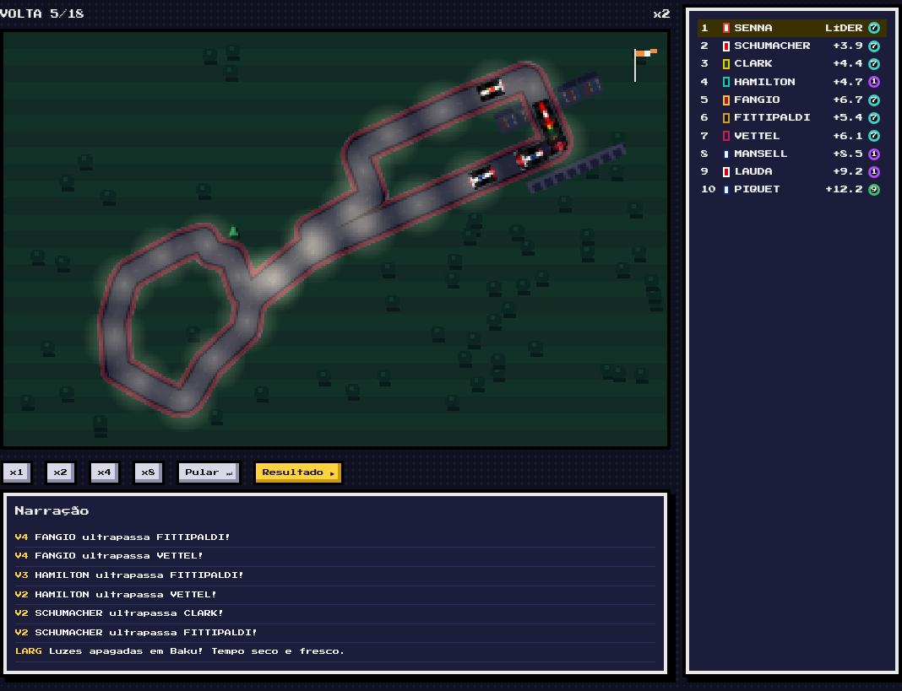
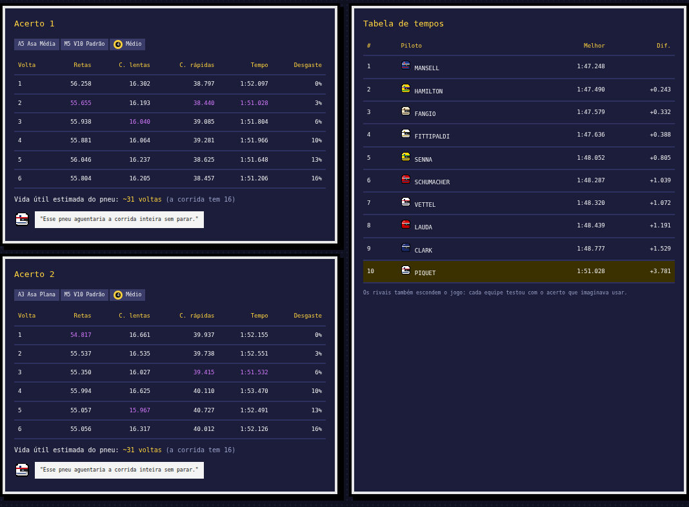
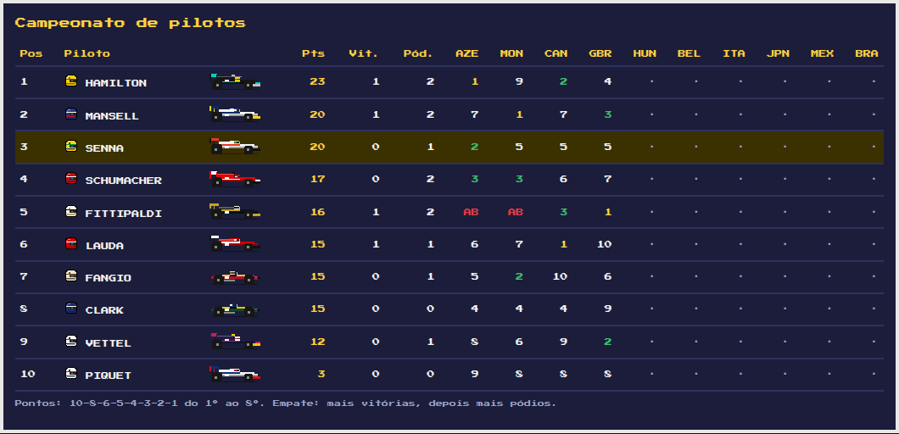
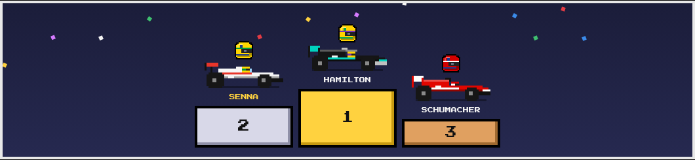

Você é o chefe de equipe.
Monte o carro, leia a previsão do tempo e vença lendas da F1 num jogo de estratégia em 8 bits, no estilo Elifoot e Brasfoot.
Jogar agora ▶ Liga com amigos
Um GP a cada 3 dias
Uma sessão por dia, sempre às 20h no seu horário. Você decide, o motor do jogo simula.
Teste
Experimente até 3 acertos. A telemetria mostra os tempos em retas, curvas lentas e curvas rápidas, o desgaste dos pneus e o que o piloto achou.
Classificação
Uma volta rápida define o grid. Parque fechado: a asa e o motor ficam travados. Aposte no tempo que vai fazer no dia seguinte.
Corrida
Escolha os pneus de cada stint, as voltas de parada e o ritmo. Depois assista à corrida em 8 bits, com narração e safety car.
3 fatores × 10 modelos. Nenhum é o melhor sempre.
Cada pista pede uma coisa. O clima muda a cada sessão. O orçamento não paga o "melhor de tudo".
✈️ Aerodinâmica
Mais pressão ajuda nas curvas e atrapalha nas retas. Com vento, asas sensíveis ficam instáveis.
🔧 Motor
Mais potência, mais consumo e mais risco de quebra. Calor e altitude roubam cavalos. Motores se desgastam na temporada.
🛞 Pneus
Do ultramacio ao chuva extrema, cada composto com a sua faixa de temperatura. O macio voa, o duro aguenta.
🌦️ Meteorologia
Sol ou chuva, calor ou frio, com ou sem vento. A previsão fica mais precisa a cada dia.
🌙 Dia e noite
Horários de circuito no estilo da F1: Baku à noite sob holofotes, Interlagos no entardecer.
📊 Telemetria
Nada de resposta pronta: você descobre o acerto pela lógica, com os dados do teste.

10 lendas, 10 carros históricos
Cada piloto tem seu ponto forte. Todos equilibrados: quem decide é a sua estratégia.
10 circuitos com traçado real
Retas longas, curvas travadas, altitude e chuva: cada pista exige uma estratégia.
Jogue do seu jeito
▶ Corrida rápida
Um fim de semana contra a IA, na pista que você escolher. Sem tempo? Pule o dia e deixe o engenheiro decidir.
🏆 Temporada
10 GPs, caixa, patrocínio e prêmios. Compre peças, cuide do desgaste dos motores e invista em desenvolvimento.
🌐 Liga online
Até 10 amigos, cada um com uma lenda. As sessões rodam às 20h, e quem não decidir fica com o engenheiro.


Monte a sua liga
Crie a liga, mande o link no grupo e escolha seu piloto. Notificações no celular avisam do prazo e do resultado.
Criar liga ▶ Treinar contra a IA